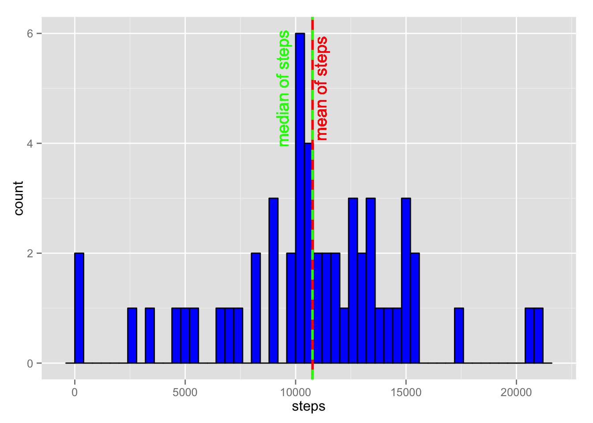
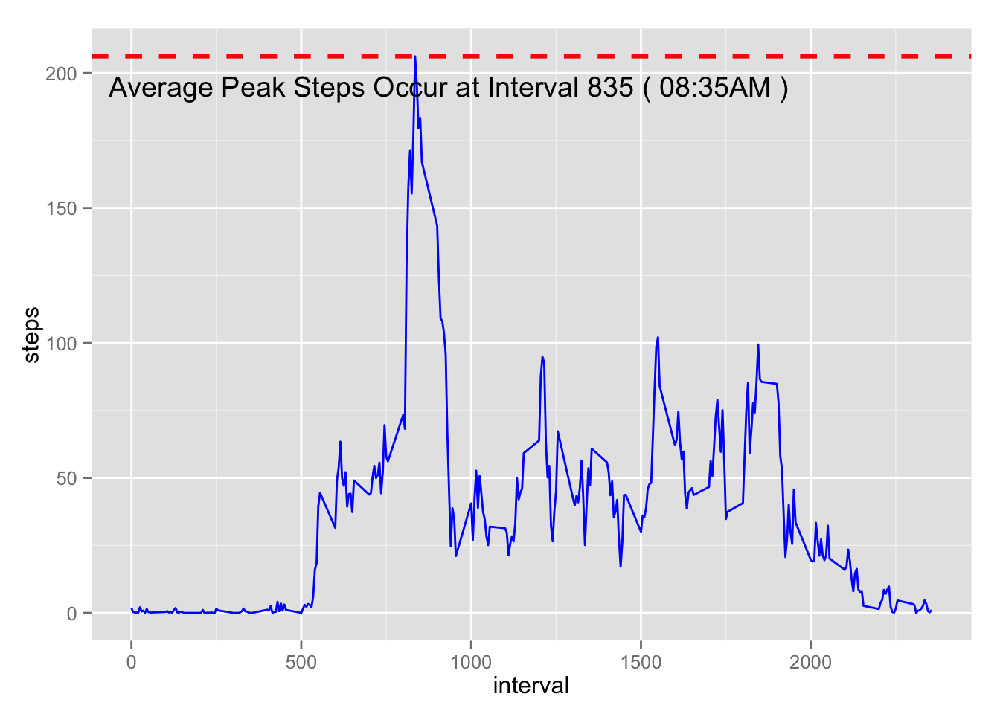
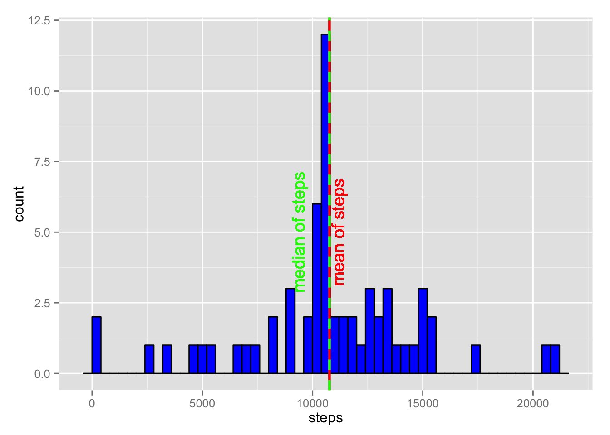
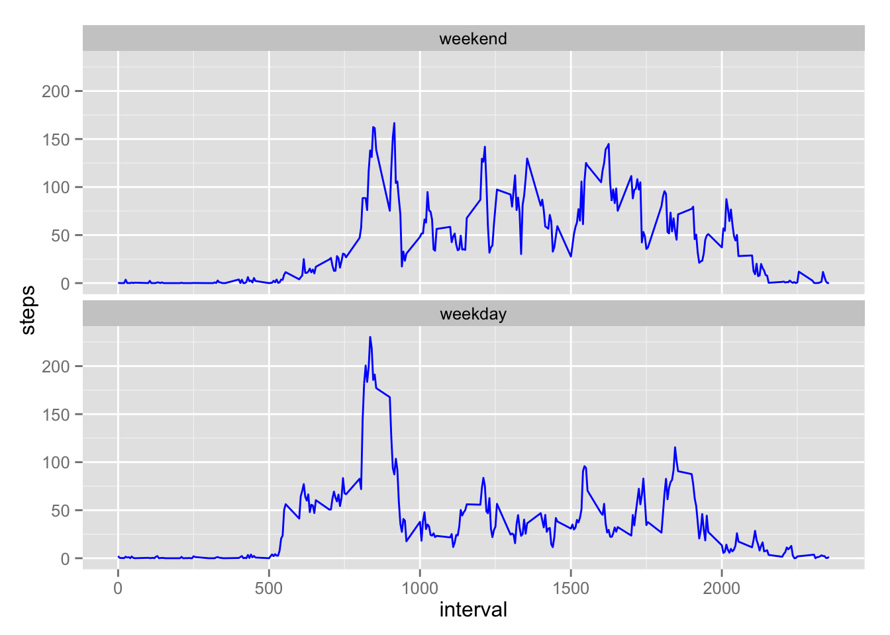

This study analyzes data from a Fitbit user over the course of two months, to determine average steps per day, what time of day the user was most active, and whether weekends were busier than weekdays.
You will need to install the ggplot2 package for this analysis, using the command:
install.packages(“ggplot2”)
You will be asked to chose a mirror site to obtain the package. Then call up the package using library(ggplot2):
library(ggplot2)First the data is downloaded.
fileURL <- "https://d396qusza40orc.cloudfront.net/repdata%2Fdata%2Factivity.zip"
temp <- tempfile()
download.file(fileURL, temp, method = "curl")Record the date and time of when the data was downloaded:
dateDownloaded <- date()
dateDownloaded## [1] "Sun Sep 20 09:56:34 2015"This data was downloaded on Sun Sep 20 09:56:34 2015.
Then read into R using the following code to unzip and read, and create data frame “fit_data”:
fit_data <- read.csv(unz(temp,"activity.csv"))
unlink(temp)Subset the data frame to eliminate records with “NA” steps:
remove_nas <- fit_data[complete.cases(fit_data), ]Then sum up the steps for each day using the aggregate function, and look at first ten rows and dimensions to make sure it is correct:
sum_steps <- aggregate(steps ~ date, data = remove_nas, sum)
head(sum_steps)## date steps
## 1 2012-10-02 126
## 2 2012-10-03 11352
## 3 2012-10-04 12116
## 4 2012-10-05 13294
## 5 2012-10-06 15420
## 6 2012-10-07 11015dim(sum_steps)## [1] 53 2Note that the first day’s data is missing. That’s because the steps for the first day were not recorded, or were “NA”, and were removed from this data set.
Now plot the histogram of daily steps, and add vertical lines showing mean and median:
p <- ggplot(sum_steps, aes(x = steps))
p <- p + geom_histogram(binwidth = 400, color = "black", fill = "blue")
p <- p + geom_vline(aes(xintercept = mean(steps)), color = "red", linetype = "solid", size = 1)
p <- p + geom_text(aes(x = mean(steps), label = "mean of steps", y = 5), color = "red", angle = 90, vjust = 1.2)
p <- p + geom_vline(aes(xintercept = median(steps)), color = "green", linetype = "dashed", size = 1)
p <- p + geom_text(aes(x = mean(steps), label = "median of steps", y = 5), color = "green", angle = 90, vjust = -2)
p
Since the mean (red solid line) and median (green dashed line) are so close together, it is difficult to distinguish between the two on the plot. So print the values:
mean(sum_steps$steps)## [1] 10766.19median(sum_steps$steps)## [1] 10765The mean and median are indeed very close to each other.
Still using the interval_avg data frame, which excludes NAs from the original data frame, we are now looking for the average for each interval across all of the days.
For this, we will calculate the average steps per interval using the aggregate function again:
interval_avg <- aggregate(steps ~ interval, data = remove_nas, mean)Next, another column was added to the data frame to show actual time of day for each interval:
temp <- c(interval_avg$interval)
temp2 <- mapply(function(x, y) paste0(rep(x, y), collapse = ""), 0, 4 - nchar(temp))
temp <- paste0(temp2, temp)
interval_avg$time <- format(strptime(temp, format = "%H%M"), format = "%H:%M%p")And the first ten rows of the result are:
## interval steps time
## 1 0 1.7169811 00:00AM
## 2 5 0.3396226 00:05AM
## 3 10 0.1320755 00:10AM
## 4 15 0.1509434 00:15AM
## 5 20 0.0754717 00:20AM
## 6 25 2.0943396 00:25AMSo now the actual time of day is available.
The busiest time of day is calculated, and the whole row is returned:
busiest <- interval_avg[which.max(interval_avg$steps), ]
busiest## interval steps time
## 104 835 206.1698 08:35AMThe last step is to draw a line plot showing average steps per time interval, and to show the interval with the maximum, or peak average number of steps:
p <- ggplot(interval_avg, aes(x = interval, y = steps, group = 1))
p <- p + geom_line(color = "blue")
p <- p + geom_hline(aes(yintercept = max(steps)), color = "red", linetype = "dashed", size = 1, label = "Maximum Average")
p <- p + annotate("text", x = busiest$interval + 100, y = busiest$steps, label = paste("Average Peak Steps Occur at Interval", busiest$interval, "(",busiest$time,")"), vjust = 2)
p
We can see that the most steps on average occurred in the morning at the five minute interval ending at 8:35AM.
First, let’s review the dimensions of the original data frame:
dim(fit_data)## [1] 17568 3Knowing that there are 17568 records in the data frame fit_data, including the NAs, we determine how many records have NAs:
rows_na <- nrow(subset(fit_data, is.na(steps)))
rows_na## [1] 23042304 out of 17568 could be significant. So we will take the average steps for each interval that is not missing, and replace the NAs with the time interval average steps.
First we will copy the fit_data data frame into a new data frame called fit_data2, to preserve the original.
fit_data2 <- fit_dataLoop through the first column to find NAs for steps taken, and replace with mean steps for that interval from the other days, from interval_avg dataframe.
for(i in 1:nrow(fit_data2)){
fit_data2[i, 1] <- ifelse(is.na(fit_data2[i, 1]) == TRUE, interval_avg[interval_avg$interval == fit_data2[i, 3], 2], fit_data2[i, 1])
}With the NAs replaced, recalculate the sum of steps for each date using aggregate function:
sum_steps2 <- aggregate(steps ~ date, data = fit_data2, sum)and plot histogram.
p <- ggplot(sum_steps2, aes(x = steps))
p <- p + geom_histogram(binwidth = 400, color = "black", fill = "blue")
p <- p + geom_vline(aes(xintercept = mean(steps)), color = "red", linetype = "solid", size = 1)
p <- p + geom_text(aes(x = mean(steps), label = "mean of steps", y = 5), color = "red", angle = 90, vjust = 1.2)
p <- p + geom_vline(aes(xintercept = median(steps)), color = "green", linetype = "dashed", size = 1)
p <- p + geom_text(aes(x = mean(steps), label = "median of steps", y = 5), color = "green", angle = 90, vjust = -2)
p
Did replacing the NAs with averages affect the mean and median steps? The mean and median are still right on top of each other, so we should look at the computations.
The mean number of steps excluding the NAs was 10766.
The mean number of steps with NAs replaces with means was 10766.
The median number of steps excluding the NAs was 10765.
The median number of steps with NAs replaces with means was 10766.
Since we replaced the NA steps with means, then the mean did not change. Medians changed only slightly. Had the NAs been replaced with zeros, the results would have been different.
The data frame fit_data2 will be re-used. It has the NAs replaced with interval averages from all days. It would be better to separate weekends and weekdays, and then take the inverval averages, but that was not done here.
First, review the stucture of the fit_data2 data frame:
str(fit_data2)## 'data.frame': 17568 obs. of 3 variables:
## $ steps : num 1.717 0.3396 0.1321 0.1509 0.0755 ...
## $ date : Factor w/ 61 levels "2012-10-01","2012-10-02",..: 1 1 1 1 1 1 1 1 1 1 ...
## $ interval: int 0 5 10 15 20 25 30 35 40 45 ...And look at first ten rows:
head(fit_data2)## steps date interval
## 1 1.71698 2012-10-01 0
## 2 0.33962 2012-10-01 5
## 3 0.13208 2012-10-01 10
## 4 0.15094 2012-10-01 15
## 5 0.07547 2012-10-01 20
## 6 2.09434 2012-10-01 25We need to change the date column from factors to dates, and verify:
fit_data2$date <- as.Date(fit_data2$date)
str(fit_data2)## 'data.frame': 17568 obs. of 3 variables:
## $ steps : num 1.717 0.3396 0.1321 0.1509 0.0755 ...
## $ date : Date, format: "2012-10-01" "2012-10-01" ...
## $ interval: int 0 5 10 15 20 25 30 35 40 45 ...Now that dates are in date format, add a column to the fit_data2 data frame, name it “day_type”, and populate that column with “weekday” or “weekend” as factors.
weekdays1 <- c("Monday", "Tuesday", "Wednesday", "Thursday", "Friday")
fit_data2$day_type <- factor((weekdays(fit_data2$date) %in% weekdays1),
levels=c(FALSE, TRUE), labels=c("weekend", "weekday"))Look at first few rows to see the result:
## steps date interval day_type
## 1 1.71698 2012-10-01 0 weekday
## 2 0.33962 2012-10-01 5 weekday
## 3 0.13208 2012-10-01 10 weekday
## 4 0.15094 2012-10-01 15 weekday
## 5 0.07547 2012-10-01 20 weekday
## 6 2.09434 2012-10-01 25 weekdayWe can also add the day of the week in another column, based on the date information. Just to verify that the day_type is consistent with the day of the week if needed.
fit_data2$dayofweek <- weekdays(fit_data2$date)
head(fit_data2)## steps date interval day_type dayofweek
## 1 1.71698 2012-10-01 0 weekday Monday
## 2 0.33962 2012-10-01 5 weekday Monday
## 3 0.13208 2012-10-01 10 weekday Monday
## 4 0.15094 2012-10-01 15 weekday Monday
## 5 0.07547 2012-10-01 20 weekday Monday
## 6 2.09434 2012-10-01 25 weekday MondayNow take the interval step averages, aggregated by interval and day_type (weekday or weekend). Call it inverval_avg2).
interval_avg2 <- aggregate(steps ~ interval + day_type, data = fit_data2, mean)A panel plot of weekend and weekday activity profiles, using ggplot, looks like this:
p <- ggplot(interval_avg2, aes(x = interval, y = steps, group = 1))
p <- p + geom_line(color = "blue")
p <- p + facet_wrap(~ day_type, ncol = 1)
p
It looks as though the subject was active early on weekdays, with less activity during the day, suggesting a commute to work or school, at least partially on foot, in a tight time schedule. The return home either involved less walking, or the departure time was more variable. By comparison, the weekend activity was more evenly spread over the day, and later into the night.